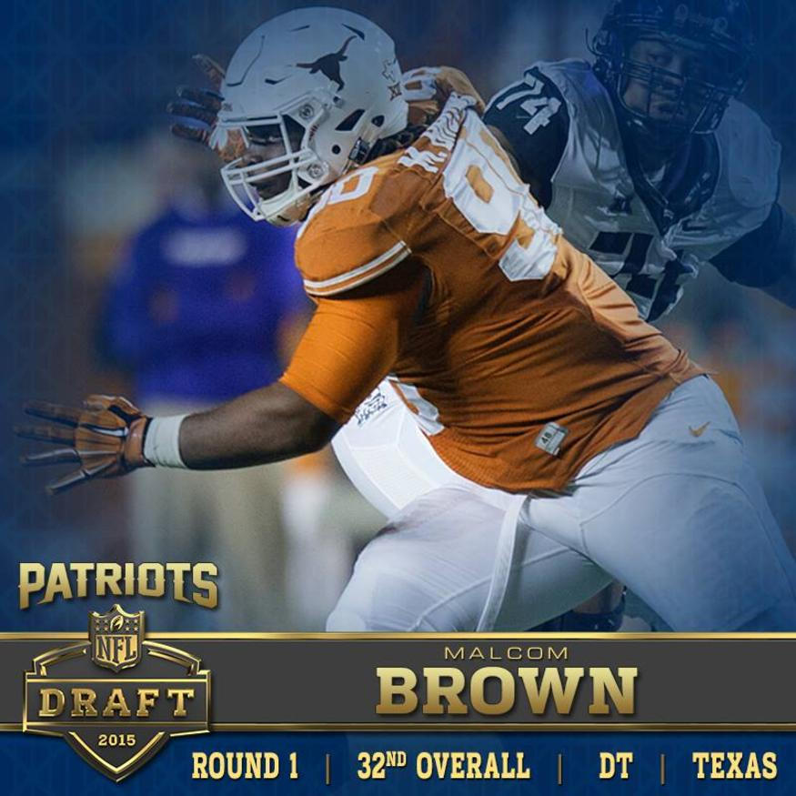

Schedule
Results
DRAFT PICKS
ROUND 1, PICK 32 (32): MALCOM BROWN, DT | TEXAS NFL.com Pick Analysis: "This is a great pick for the Patriots. To get Brown at 32 is tremendous. He has an ability to push the pocket. He can be a three-down player, but in New England he'll be in a system in which he plays all over the place." -- Mike Mayock
ROUND 2, PICK 32 (64): JORDAN RICHARDS, DB | STANFORD NFL.com Pick Analysis: "Richards is a very smart safety. This is a bit of a reach for the Patriots; maybe two rounds early." -- Daniel Jeremiah
ROUND 3, PICK 33 (97): GENEO GRISSOM, DL | OKLAHOMA NFL.com Pick Analysis: "He's played all over the place at Oklahoma. He can be an edge rusher and can drop into coverage. He is an athlete, is versatile and smart, and fits New England." -- Mike Mayock
ROUND 4, PICK 2 (101): TREY FLOWERS, DE | ARKANSAS NFL.com Pick Analysis: Patriots get good value for Flowers in the 4th round. His staple is power and ability to control the line of scrimmage. Bill Belichick likes to rotate his defensive front and Flowers can make an impact against the run. --Mark Dulgerian
ROUND 4, PICK 12 (111): TRE' JACKSON, G | FLORIDA STATE NFL.com Pick Analysis: Jackson is the ideal big body you want in an interior lineman. He'll earn his paycheck primarily as a run block specialist. If he can stay healthy he could compete for a starting spot on a team that has had its share volatility along the offensive line. --Mark Dulgerian
ROUND 4, PICK 32 (131): SHAQ MASON, OL | GEORGIA TECH NFL.com Pick Analysis: New England gets a bull of a run blocker in Shaq Mason. He needs some work in pass protection, but his elite power in the run game could earn him early playing time on an offensive line that saw its struggles last year. --Mark Dulgerian
ROUND 5, PICK 30 (166): JOE CARDONA, LS | NAVY NFL.com Pick Analysis: Extremely accurate and consistent as snapper for punts over last four years and field goals over last three. Snaps have been clocked at 41 mph, which is considered outstanding. Snaps with power and doesn't show a prominent hitch in his delivery.
ROUND 6, PICK 2 (178): MATTHEW WELLS, LB | MISSISSIPPI STATE NFL.com Pick Analysis: New England has a knack for finding pieces to their own unique puzzle and Wells is another example of that. He blew up his Pro Day running in the 4.4s and he's battle tested. He will likely find a role as a special teams cover man early in his career. --Mark Dulgerian
ROUND 6, PICK 26 (202): A.J. DERBY, TE | ARKANSAS NFL.com Pick Analysis: Is it any surprise Bill Belichick adds another tight end to his roster? Derby is a raw athlete who converted from linebacker to quarterback and now to tight end. He is creative with the ball in his hands but there is work to be done from the snap to the catch. --Mark Dulgerian
ROUND 7, PICK 30 (247): DARRYL ROBERTS, CB | MARSHALL NFL.com Pick Analysis: The Patriots find an excellent athlete who put up explosive numbers at his pro day (4.38 40, 1.48 10-Yd, 39 VJ). He'll need considerable technique work but he's a low risk pick with some upside down the line. --Mark Dulgerian
ROUND 7, PICK 36 (253): XZAVIER DICKSON, DL | ALABAMA NFL.com Pick Analysis: Belichick will kick the tires on a Saban-groomed outside linebacker who was versatile in multiple fronts the Crimson Tide employed. --Mark Dulgerian
Most promising draft pick of 2015
SEASON
The 2015 New England Patriots season was the franchise's 46th season in the National Football League, the 56th overall and the 16th under head coach Bill Belichick. The Patriots entered the season as the defending Super Bowl champions.
After going 10–0 to begin the season, the Patriots' first loss came against the Denver Broncos in overtime in Week 12. They would go on to lose four of their last six games, ultimately finishing the regular season with a 12–4 record for the fourth straight year. In Week 14, the Patriots clinched their seventh straight AFC East division title. By this, the Patriots tied the 1979 Los Angeles Rams for most consecutive division titles. As the second seeded team in the AFC, they secured a first-round bye for the playoffs and home-field advantage for their first playoff game.
In the divisional round of the playoffs, the Patriots defeated the Kansas City Chiefs 27–20 to advance to the AFC Championship for the fifth straight year, where they fell on the road to the eventual Super Bowl 50 champion Denver Broncos 20–18.